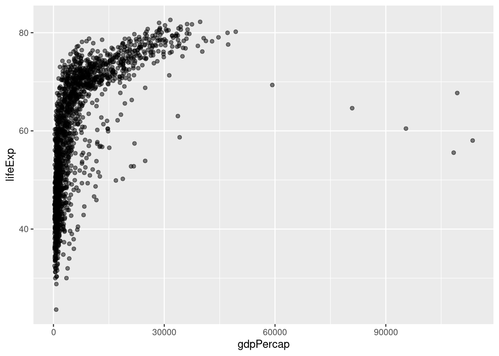
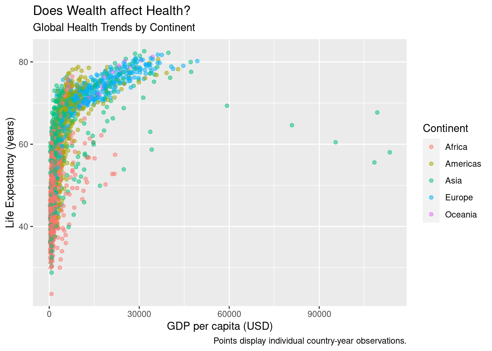
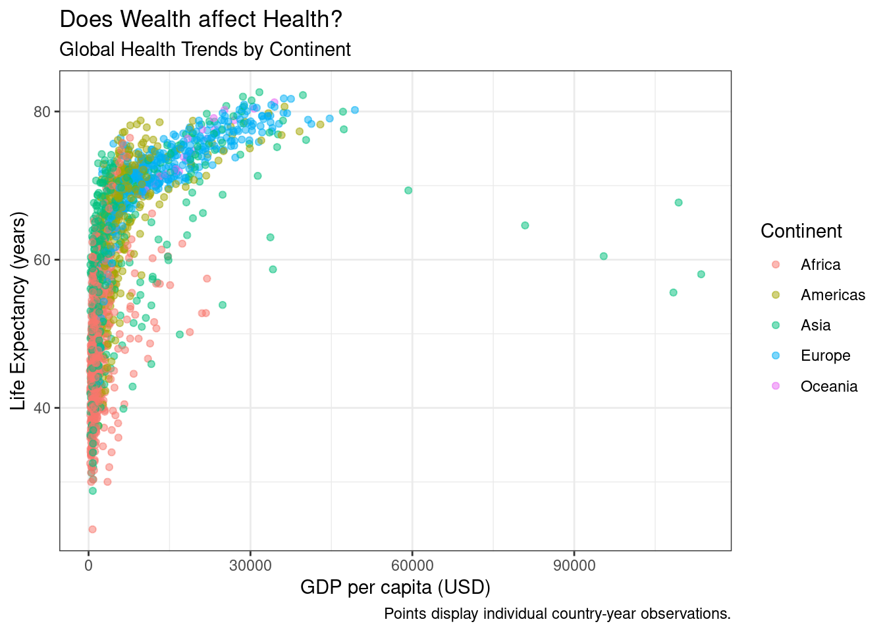
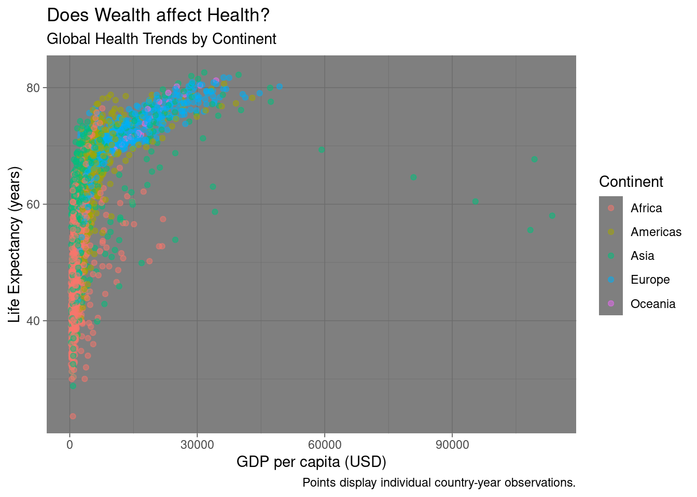
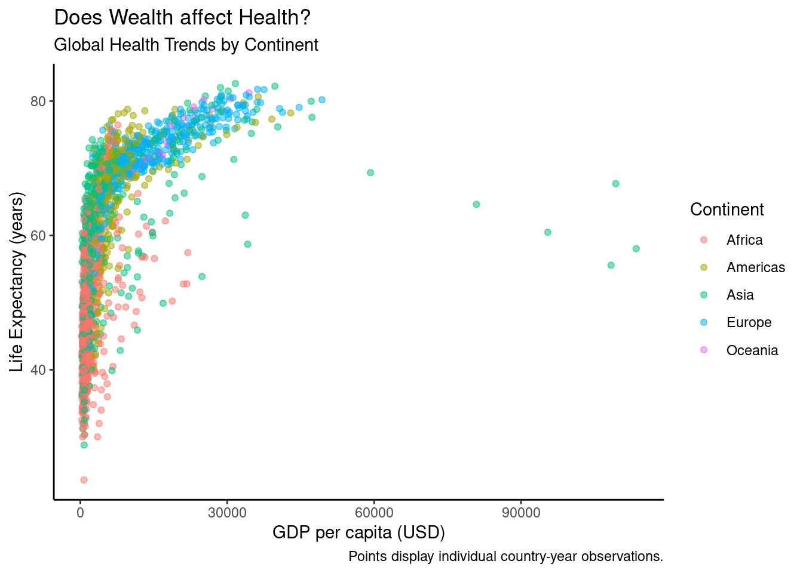

Skill: Visualization with ggplot in R
Visualization is a key part of statistical analyses, especially in systems engineering! Visuals themselves are often the analysis themselves! In this tutorial, we’re going to learn how to visualize data in the ggplot2 package.
Please follow along using the code below!
0. Loading Packages
Finally, let’s load our packages with library().
# Data viz and data manipulation packages
library(ggplot2)
library(dplyr)
# Data sources
library(gapminder)Notes:
SAVE YOUR SCRIPT.
Always comment your code (what I’m doing now),
use lots of spaces, and keep it clean.
1. Gapminder data
Economist Hans Rosling made a dataset that examines change in life expectancy over time for most countries in the world. It is contained in the gapminder package!
# Let's view it. (see console below)
gapminder## # A tibble: 1,704 × 6
## country continent year lifeExp pop gdpPercap
## <fct> <fct> <int> <dbl> <int> <dbl>
## 1 Afghanistan Asia 1952 28.8 8425333 779.
## 2 Afghanistan Asia 1957 30.3 9240934 821.
## 3 Afghanistan Asia 1962 32.0 10267083 853.
## 4 Afghanistan Asia 1967 34.0 11537966 836.
## 5 Afghanistan Asia 1972 36.1 13079460 740.
## 6 Afghanistan Asia 1977 38.4 14880372 786.
## 7 Afghanistan Asia 1982 39.9 12881816 978.
## 8 Afghanistan Asia 1987 40.8 13867957 852.
## 9 Afghanistan Asia 1992 41.7 16317921 649.
## 10 Afghanistan Asia 1997 41.8 22227415 635.
## # … with 1,694 more rows Each row is a country-year, marking the life expectancy, population, and gross domestic product (GDP) per capita.
On your end, you can only can see some of it, right?
Let's check out what vectors are in this dataframe, using the `glimpse` function from the `dplyr` package.# (Remember, a vector is a column in a spreadsheet;
# a data.frame is a spreadsheet.)
glimpse(gapminder)## Rows: 1,704
## Columns: 6
## $ country <fct> "Afghanistan", "Afghanistan", "Afghanistan", "Afghanistan", …
## $ continent <fct> Asia, Asia, Asia, Asia, Asia, Asia, Asia, Asia, Asia, Asia, …
## $ year <int> 1952, 1957, 1962, 1967, 1972, 1977, 1982, 1987, 1992, 1997, …
## $ lifeExp <dbl> 28.801, 30.332, 31.997, 34.020, 36.088, 38.438, 39.854, 40.8…
## $ pop <int> 8425333, 9240934, 10267083, 11537966, 13079460, 14880372, 12…
## $ gdpPercap <dbl> 779.4453, 820.8530, 853.1007, 836.1971, 739.9811, 786.1134, …# Nice, we can see things more concisely.Our data has six variables. Great!
2. Your first scatterplot
Using the gapminder data, let’s map a series of vectors to become aesthetic features in the visualization (point, colors, fills, etc.).
```r
ggplot(data = gapminder, mapping = aes(
# Let's make the x-axis gross-domestic product per capita (wealth per person)
x = year,
# Let's make the y-axis country life expectancy
y = lifeExp))
```
<img src="_main_files/figure-html/unnamed-chunk-67-1.png" width="672" />
Huh! We made an empty graph. Cool.
That's because ggplot needs helper functions to add aesthetic features to the graph.For example, adding + geom_point() will overlay a scatterplot.
# Make a scatterplot
ggplot(data = gapminder, mapping = aes(x = gdpPercap, y = lifeExp)) + # same as above, except "+"
geom_point()
LC 2
Question
What happens when you add the alpha, changing its values in the 3 visuals below?
# Run the following code:
ggplot(data = gapminder, mapping = aes(x = gdpPercap, y = lifeExp)) +
geom_point(alpha = 0.2)ggplot(data = gapminder, mapping = aes(x = gdpPercap, y = lifeExp)) +
geom_point(alpha = 0.5)
ggplot(data = gapminder, mapping = aes(x = gdpPercap, y = lifeExp)) +
geom_point(alpha = 1)
LC 3
Question
We can make it more visually appealing. What happens when we do each of the following?
If you want to make it a single color, where do you need to write
color = ...?If you want to make it multiple colors according to a vector, where do you need to write
color =?
# Run the following code:
# Version 1
ggplot(data = gapminder, mapping = aes(x = gdpPercap, y = lifeExp)) +
geom_point(alpha = 0.5, color = "steelblue")
# Version 2
ggplot(data = gapminder, mapping = aes(x = gdpPercap, y = lifeExp,
color = continent)) +
geom_point(alpha = 0.5)4. Improving our Visualizations
We can (and should!) make our visualizations much more readable by adding appropriate labels.
ggplot(data = gapminder, mapping = aes(x = gdpPercap, y = lifeExp,
color = continent)) +
geom_point(alpha = 0.5) +
# Add labels!
labs(x = "GDP per capita (USD)", # label for x-values
y = "Life Expectancy (years)", # label for y-values
color = "Continent", # label for colors
title = "Does Wealth affect Health?", # overall title
subtitle = "Global Health Trends by Continent", # subtitle!
caption = "Points display individual country-year observations.") # caption
We can actually save visualizations as objects too, which can make things faster.
Let’s save our visual as myviz
myviz <- ggplot(data = gapminder, mapping = aes(x = gdpPercap, y = lifeExp,
color = continent)) +
geom_point(alpha = 0.5) +
labs(x = "GDP per capita (USD)",
y = "Life Expectancy (years)",
color = "Continent",
title = "Does Wealth affect Health?", # overall title
subtitle = "Global Health Trends by Continent", # subtitle!
caption = "Points display individual country-year observations.") # captionNext, let’s try a few more learning check that will ask you to try our ways to improve the quality and readability of your visuals!
LC 5
Question
We can do better, adding things onto our myviz object! Try changing themes. What happens below?
# Version theme_bw
myviz +
# How about this theme?
theme_bw()
# Version theme_dark
myviz +
# How about this theme?
theme_dark()
# Version theme_classic
myviz +
# How about this theme?
theme_classic()
Answer
theme_bw() makes a nice black-and-white graph; theme_dark() makes a funky graph with a dark grey background; theme_classic() makes a very simple graph, with fewer distractions.
I personally really like the default theme or theme_bw(). Sometimes theme_classic() can be really helpful if you have a particularly busy visual.